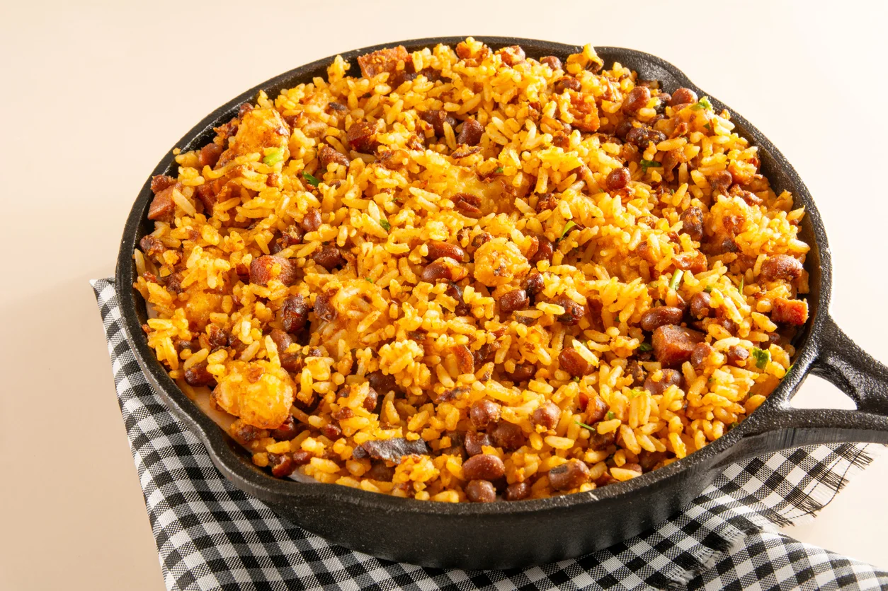
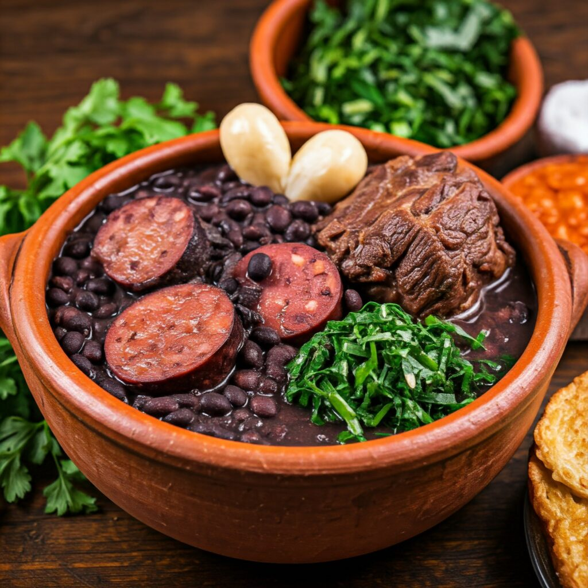

Baião de Dois
Arroz, Feijão Verde, Bacon, Carne De Panela, Cenoura e Calabresa
Preço: 35,00 R$

Feijoada
Arroz, Feijão Preto, Bacon, Carne De Porco, Farofa e Calabresa
Preço: 25,00 R$
Strogonoff
Arroz, Frango Em Cubo, Batata Palha e Salada de Tomate